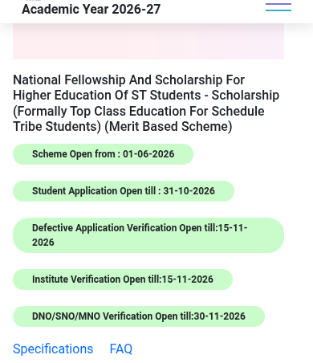

ST Top Class scholarship: full fees plus Rs 3,000 a month, apply on NSP by 31 October
The National Fellowship and Scholarship for Higher Education of ST Students - the scholarship component, earlier called Top Class Education for ST students - pays the full admission and tuition fees of Scheduled Tribe students studying at 252 premier institutes notified by the Ministry of Tribal Affairs, plus a Rs 3,000 monthly stipend, a yearly book grant and a one-time Rs 45,000 laptop grant. Applications for 2026-27 are open on the National Scholarship Portal and close on 31 October 2026.
@@COVER@@Who can apply
- Scheduled Tribe students with an ST certificate issued by the designated authority of their State/UT
- Admitted on merit to a graduate or postgraduate course at one of the 252 premier institutes notified by the Ministry of Tribal Affairs (the list is Annexure I of the scheme guidelines; it covers institutes in fields like engineering, medicine, management, law, humanities and social sciences)
- Total family income up to Rs 6 lakh a year (gross income from all sources)
- Not admitted through management quota in a private institute
- Not receiving any other Central/State scholarship for the same study
What you get
- Full admission fee, tuition fee and other non-refundable charges - paid in full at government institutes, and up to Rs 2.5 lakh a year at private institutes
- Stipend: Rs 3,000 a month
- Books and stationery: Rs 5,000 a year, no bills needed
- Computer/laptop with accessories: Rs 45,000 one-time during the course, no bills needed
- The scholarship continues till you finish the course, subject to satisfactory performance certified by your institute
How to apply: step by step

- Keep documents ready: ST certificate, income certificate (up to Rs 6 lakh), admission proof and fee details from your institute, mark lists, Aadhaar, and your own Aadhaar-linked bank account.
- Complete One Time Registration (OTR) on NSP: Students, then Register. OTR needs an active mobile number and Aadhaar-based eKYC, and it is free.

- Log in on NSP with your OTR number and password, fill in your personal, academic and bank details, and choose "National Fellowship And Scholarship For Higher Education Of ST Students - Scholarship".

- Upload the documents and submit. Note your application ID.
- Your institute verifies on NSP by 15 November 2026; defective applications can be corrected and re-verified by the same date; nodal verification runs till 30 November 2026.
Watch: apply step by step
- English: How to Generate OTR Number on NSP OTR App - Step by Step Guide - Buddy4Study, 2025. Walks through the mandatory OTR registration that comes before this application.
- Malayalam: we could not find a reliable, current Malayalam video covering this scheme's 2026-27 application. The official pages below carry the full details.
These videos are by independent education channels, not the government - always cross-check details on the official pages linked below. Dates on the NSP scheme list (checked 19 October 2026): student applications close 31 October 2026; defective application verification and institute verification close 15 November 2026; nodal verification closes 30 November 2026. Benefits, the income limit and institute coverage are from the Ministry of Tribal Affairs guidelines published on NSP.
Sources: NSP scheme list, scheme guidelines (PDF), official FAQ (PDF), Ministry of Tribal Affairs Top Class page. Checked 19 October 2026. This is an AiCoN explainer, not a government publication.